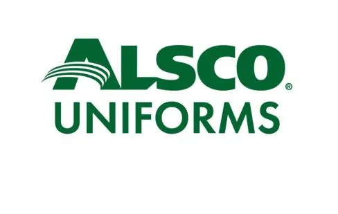
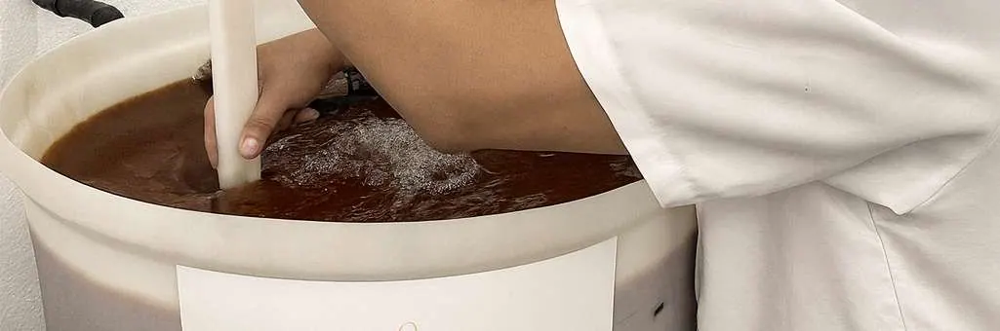

Execução Técnica · Regeneração · Manutenção
Regeneração de resinas de troca iônica, de 40% a 60% mais barata que resina nova.
Há mais de 28 anos regeneramos resinas de troca iônica lote a lote, sem misturar resinas de clientes diferentes. Cada coluna recebe um QR Code, e cuidamos da coleta e da devolução.

Vantagens da regeneração
Regenerar reduz o custo e o descarte sem abrir mão do desempenho.
Redução de custos
Até 40–60% mais barato que resina nova.
Teste a cada regeneração
Testes de pH, condutividade e laudo técnico a cada regeneração, antes do lote voltar para operação.
Sustentabilidade
Menos descarte, mais alinhamento com práticas ESG e metas de sustentabilidade.
Rastreabilidade total
Cada lote identificado e numerado com QR Code, do agendamento à devolução.

Regeneração individual
Sua resina nunca se mistura com a de outro cliente.
Processo exclusivo, sem mistura de resinas entre clientes: a resina que volta é a que você enviou. Cada coluna é identificada e numerada com QR Code para acompanhamento completo.
- Regeneração individual, sem mistura entre clientes
- Controle de qualidade: amostra de 1 litro testada a cada regeneração
- Relatório técnico e histórico completo de cada resina
Sistema Leva e Traz
Logística completa de coleta, processamento e entrega, para reduzir o tempo de parada do seu sistema.
Agendamento
Você agenda a coleta conforme a disponibilidade da sua operação.
Retirada
Nossa equipe retira as colunas com segurança, preservando o material.
Transporte
Transporte próprio até nossa unidade de regeneração em Taboão da Serra.
Processamento
Regeneração individual com controle de qualidade a cada etapa.
Devolução
Entrega da resina regenerada, pronta para voltar à operação.
Obs. Transporte sujeito à disponibilidade de acordo com a região.

Quem somos
Desde 1998 regenerando resina com controle de qualidade individualizado.
A Stella Resinas fornece e regenera resinas de troca iônica, com infraestrutura própria e equipe técnica qualificada. Junto com a Aclaris, forma uma estrutura integrada: comercial e projetos de um lado, execução técnica e serviços do outro.
No LinkedIn
Publicamos aqui só as postagens que interessam a quem visita o site.
Perguntas frequentes sobre regeneração de resinas
Quanto custa regenerar a resina em comparação com comprar nova?
A regeneração custa de 40% a 60% menos que resina nova, segundo a Stella. O valor exato depende do tipo e do volume de resina. Peça um orçamento junto com a solicitação de coleta.
Minha resina é misturada com a de outros clientes?
Não. Cada lote é regenerado individualmente, a coluna é identificada e numerada com QR Code, e o histórico completo de cada resina fica no relatório técnico entregue ao cliente.
Que testes são feitos depois da regeneração?
A cada regeneração, uma amostra de 1 litro é testada. A Stella mede pH e condutividade e emite laudo técnico antes de o lote voltar para a operação.
Como funciona o Sistema Leva e Traz?
São cinco etapas: agendamento, retirada das colunas, transporte próprio até a unidade de Taboão da Serra, processamento e devolução da resina regenerada. O transporte depende da disponibilidade para a sua região.
Que tipos de resina a Stella regenera?
Leitos mistos e separados, abrandadores, resinas para remoção de nitrato e bário e resinas especiais. Também fornece resinas de troca iônica e faz manutenção e sanitização de colunas.
Onde fica a Stella Resinas e qual é o horário de atendimento?
A sede e a unidade de regeneração ficam na R. Afonso Desidério, 30, em Taboão da Serra (SP), CEP 06795-040. O atendimento é de segunda a sexta, das 07:30 às 17:30, pelo telefone (11) 4786-8000.